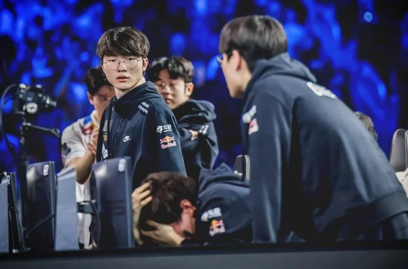

Jest to jeden z najbardziej popularnych tytułów esportowych. Charakteryzuje się on systemem ligowym oraz francyzą. Tak prezentuje się na obecną chwilę ranking 5 najlepszych drużyn w świecie LoLa.
Poniżej znajdują się linki do najważniejszych wydarzeń oraz informacji w świecie Esportowego Lola.
Esport był jednym z najszybciej rozwijających się dyscyplin sportowych jednak od pewnego czasu przez wszystkie tytuły esportowe przewija się prawdopodbnie najgorszy okres w ich istnieniu. Tytuły esportowe wyhamowały z rozwojem w trakcie pandemii a po niej napotkał się kryzys oglądalności która spadła w dużym stopniu. Problemem dla wielu drużyn jest znalezien sponsorów żeby drużyny mogły się jakkolwiek liczyć o jakieś trofea. Scena League of Legends przeżywa problem związany z systemem francyzowym jak i nie konkurencyjnością regionów, problem związany z Francyzą narósł po pandemii choć był on odkąd została ona wprowadzona , do najważniejszych lig z których można walczyć o dostanie się na mistrzostwa świata jak i MSI trzeba zapłacić za slot w takowej lidze (LEC,LCS,LCK,LPL itp) teoretycznie rekompesatą są niższe ligi regionalne(Europa)jednak często zdarza się tak ze gracze wygrywający regionalne mistrzotwo europy nie dostają ofert z drużyn z najwyższej ligi często przez to że jest to zamknięte środowisko w którym bardzo ważną role odgrywają znajomości. Problem też jest z dużą róźnicą poziomów między regionami zachodnimi (Europa,Ameryka Północna) a regionami Wschodnimi(Chiny,Korea) problem wywodzi się od systemu francyzy jak i pandemii która uniemożliwiła drużyn granie międzynarodowe.
Scena Counter Strikea boryka się też ze swoimi problemami, twórcy tytułu zaczęli zwracać na niego mniejszą uwagę co doprowadziło do tego ze przeniesieniona gra na nowy silnik jest pełna wielu błedów, problemem też są turnieje mniejszych tierów na których często jest uprawiany matchfixing(ustawianie meczów), oraz blokada drużyn które nie dostają nawet informacji zwrotnej dlaczego.
Jako fan esportu oraz kibic wielu drużyn mam nadzieje ze te problemy się rozwiążą i że będzie można znowu cieszyć się tym sportem jak naprzykład w 2018 lub 2019 roku. Na koniec mogę podać ciekawostkę że esport w Korei jest uznawany za sport i zapytanie przeciętnego Koreańczyka o to czym jest esport ten o nim opowie i poda swojego ulubionego gracz oraz organizacje.
Jest to kolejny bardzo popularny tytuł esportowy.Charakteryzuje się on otwartością kwalifikacji do najważniejszych turniejów w roku oraz ze turnieje mogą być organizowane przez prywatnych organizatorów. Do najważniejszych organizatorów zalicza się takie firmy jak:
Top 5 najlepszych drużyn w Counter Striku
Poniżej znajdują się linki do najważniejszych informacji z dwóch tygodni oraz wydarzeń z CSowego kalendarza esportowego.